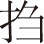
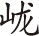
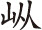

【窣地锦裆】 （外老僧上 [1] ） 色到空门也着花 [2] ，佛桑春老散香霞 [3] 。买栽池馆意无涯，看到子孙能几家？
自家乃是崇敬寺中一个无相法师便是。坐禅出定 [4] ，偶见牡丹盛开，必有冠盖游赏，不免叫弟子们出来支对 [5] 。弟子何在？（末丑弟子上）
【前腔】 僧家亦有芳春兴，鼻观偷香色尘映 [6] 。试看清池与明镜，何曾不受花枝影？
师父，问讯了 [7] 。师父，牡丹折一枝，胆瓶中供佛也好 [8] 。（外）那枝色相儿好？（丑）大红、桃红、粉红、紫红，百十余种，老师父要插时，第一是醉杨妃、肉西施 [9] ，花头儿好。（外）胡说！（末）白净的是观音面、佛头青 [10] ，可好？（外）使得。名花盛发，俗眼争看。你两人在此支持，咱去入定也。正是生香世界锦斓斑，天雨曼陀照玉盘。一朵官黄微拂掠，鞓红髻紫不须看 [11] 。（下。丑）兄弟，冠盖来赏牡丹，有费迎待。你看那崔韦二秀才张筵设席，请卢府李参军去了。俺们不如锁上禅堂，别处随喜。正是酒驻赏心客，花催行脚僧 [12] 。（下。韦崔上）
【西地锦引】 （崔）艳萼奇葩翠捧，翦裁费尽春工。（韦）径尺平头 [13] ，几重深影，一片云红。
（崔）夏卿兄，这寺中酒筵已设，李郎早晚到来。好盛的牡丹也！
【高阳台引】 （兵校数人持白棍拥生上） 芳月融晴，禁烟熏暖 [14] ，金界瑞光 [15] 。霭霭霏霏，未怕宿酲寒中 [16] 。绮门御陌啼莺午 [17] ，恰来旧约宾从。望花宫，翠雾连帷，彩霞飞栋。（见介，韦崔笑介）君虞久别也！ 一春几许闲空？恁 锦城香国，蜂浮蝶冗 [18] 。罗绮笙歌，春光无奈娇纵。（生） 宫袍荏苒花间意 [19] ，倩东风尽日传送。（韦崔合） 倚新妆，沉香亭畔，那年供奉 [20] 。
（众揖介，崔）燕归巢后即离群 [21] ，（韦）吟倚东风怯晚春。（生）独坐侯家正惆怅，（合）牡丹时候一逢君。（崔）十郎，自别秦川，数年不见，好忘旧也！（韦）今日请十郎花前玩赏，是话休提，且看酒来！（校）韦相公怎生替了和尚作东？（韦）你不知，这和尚唤作见花羞 [22] 。（酒保上）佛座竟闻香世界，豪游须结醉因缘 [23] 。禀相公，酒到了。（韦崔送酒介）
【高阳台】 （韦） 翠盖笼娇，青猊袅韵 [24] ，缀压枝头春重。绣毂晴雷 [25] ，飞断六街尘鞚 [26] 。欢哄。倚妆深色如有意，怕春去未禁拦纵。齐解逞，千层一捻，殿住春红勒迸 [27] 。
【前腔】 （生） 谁种？鹤顶移鞓，檀心倒晕，旋瓣重瓤争耸。渲紫生绯，袍带寿安围拥。晴弄。绛罗高卷春正永，浑自倚玉楼香梦。须护取，锦帐流苏，映日 飘摇螮 [28] 。
【前腔】 （崔） 珍重。驼褐霏烟，鹅黄漾日，都 不似翠苞凝凤 [29] 。暮雨朝云，红香醉来几瓮。闲咏。司花疑与根别染，依约傍九霞仙洞。谁分许，精神万点，长则是 花王出众 [30] 。
【前腔】 （生） 清供 [31] 。赤玉盘欹，锦丝球簇 [32] ，百宝雕阑低控。绝艳浓胭，矗矗彩云飞滃 [33] 。还用。嫣然宜笑花片里，指痕上粉香弹动 [34] 。趁灵心，袖笼轻翦，翦下 断红偷送。
【前腔】 （韦）吟弄。 向 孔雀图中，流莺队里，多丽恣妖迎宠。近 红药天阶 [35] ，衣香夜染扶从。正恐。谑花士女闲赠取，还应羡洛阳旧种 [36] 。春老也，怎得 名花倾国 [37] ，一尊长共。
（崔）君虞，胭红粉紫，谁不玩赏？只那幽廊绝壁之下，有白牡丹一株，素色清香，无人瞅采，好可怜也！
【前腔】 心痛。素色鸾娇，青心凤尾 [38] ，别自玲珑一种。怅瑶台 月下初归 [39] ，东风倚阑谁共？（韦） 相讽。他 闲庭一枝横似水，便云想衣裳何用 [40] ？（合）李郎， 他 无限恨，断魂欲语，兀自 幽香遥送。
（韦）君虞，今日玩赏，就将牡丹联成一绝如何？（生）正好。（崔）君虞请先。（生）长安年少惜春残，（崔）争认慈恩紫牡丹 [41] 。（韦）待小弟凑成。别有玉盘承露冷 [42] ，无人起就月中看。（生作叹息介，崔）君虞为甚沉吟？再向回廊外散心也。（行介。豪士黄衫带翦发胡奴捧剑上，豪笑介）好不盛的牡丹也！羯鼓催敲一捻痕 [43] ，艳高堪领百花尊。红罗一尺春风髻，翠袖三生日暮魂 [44] 。自家埋名豪客便是，听得负心汉李参军在此赏花，没些时酒阑何处也？
【新水令】 俺则为这 牡丹风 吹起鬓边丝，抵多少 会宾堂酒牌金字 [45] 。须不是宴 慈恩塔上题，又不是和 灵隐月中词 [46] 。两三个细 酸俫在兹 [47] ，消受些吃一看 二拿三说四 [48] 。
猛想起来，咱要诛了这无义汉何难？只是惜树怕拿修月斧 [49] ，爱花须筑避风台 [50] 。且跟那些听说甚来。
【南步步娇】 （崔） 提起 可怜人是郑家子，（生低问）近日如何？（韦）他 镇日里 啼红渍。流光去几时，子母孤贫，靠你成何事？（生叹介）道他有个人了。（崔） 他甘心 为你守相思，怎生 弃置他在 空房死。
（校上）崔先儿，你说甚么相思死？你管闲事，一个黄衫人来也。
【折桂令】 （豪） 暗端相典雅风姿，怪不的 有了旧人，凑上新知。汉相如 似此情词，怎寻觅卓 文君瑕疵。早则是 有情人教他闷死，惜花人心事怜慈。听他刎颈交 切切偲偲 [51] ，惹的俺断肠人 急急孜孜 [52] 。
再听他一会也。
【江儿水】 （生） 接叶心如刺 [53] ，看花 泪欲滋。（韦）风光甚丽，草木荣华，伤哉郑君，衔冤空室。 恨 娇香他 只为多情死，（生泣介）二君定不知我，因卢太尉恩礼，宛转支吾，那曾就亲卢府。 誓 盟香那得无终始，傍 权门取次看行止。（崔）君虞，乘兴一见郑君何如？（生叹介）怎敢造次便去也！（韦）那人早晚待君永诀，足下终能弃置，实是忍人 [54] 。（韦崔合） 好为思之，丈夫不宜如此。
（校上）韦先儿管闲事，黄衫人又来也。（豪士上）俺听说了多时也。列公请了。公非李十郎者乎？某族本山东，姻连外戚，虽乏文藻 [55] ，心尝乐贤 [56] ，仰公声华 [57] ，常思觏止 [58] ，今日幸会，得睹清扬 [59] 。某之敝居，去此不远，亦有声乐，足以娱情，妖姬八九人，骏马十数匹，惟公所要 [60] ，但愿一过。（韦、崔）有这繁华所在，且往领盛意。美酒笙歌，放怀为妙。（豪）在下有马数匹，拣一匹骏气的背上李郎，二君缓来。（崔、韦）请了。且逐金丸去 [61] ，高嘶宝马来。（下。豪）胡奴，快取两匹追风骏马来。（胡奴二人做马嘶上）
【雁儿落】 （豪） 有几匹骏雕鞍是 俺家雪花狮 [62] ，有几个俊苍头是 俺家花鸟使 [63] 。马呵 消得你 一鞭儿，奴呵 做得你 三分事。马呵三花 乍翦络青丝 [64] ，奴呵双眉 如画粉红姿。咱呵甚意儿把 良马思君子，将红粉 赠男儿家赀？咱那里 金谷 园难似此 [65] 。你辞也么辞，看咱点 鞭头云外指。
（校恼介）又一个管闲事的人也！你不听得俺卢府威风么？参军爷待做俺府里东床，引他那里去？看我手中白棍儿么！
【侥侥令】 摩娑起手底 棍儿打这厮，棍儿 上有卢字。（豪笑介）有字怎的？（校） 明写着 你肉眼迷厮，逞 查强死 [66] 。参军呵， 他 坦腹乘龙衣金紫，好不受用也！ 你有铜斗儿 家赀你 自家使 [67] 。
【收江南】 （豪） 呀，禁持的李 学士没参差 [68] ，卢太尉甚娘儿！ 比似俺将你 老东床去了也那厮，和 你家小姐对情词。（做拔剑介） 看剑儿雄雌，不甫你 一个来一个儿死 [69] ！
（校收棍做怕介）和你耍哩，提刀怎的？难道杀人不偿命？看你家金谷园去，管俺们一个醉。（豪）叫胡奴挟李十郎上马。（并马行介，生）前路相似胜业坊。（又行问介）前面望见曲头。（又行介）将次是霍王府哩。（豪）问他怎么？（生私云）怎认得这所在也？
【园林好】 似曾 相识这 花骢和小厮。（奴）参军爷好眼哩！（生） 转前坊旧家儿 在兹。承相招，可有别路到潭府 [70] ？（豪）径须从此。（生） 迤逦蓦然来至，过他们甚意儿？（又）
（豪）这不妨，坊门多有似也。
【沽美酒】 稳着你个锁 鞍鞓花外嘶，（又） 夹着你黑 昆仑海山使 [71] 。这些时那一个不 醉染红香弄晚飔 [72] 。是谁家 美人独自？是 谁家门巷偏似？我呵 心知肚知，萍水 契相知几时？烟花担嗟咨怎辞 [73] ？呀， 比似 你逞精神，长则在 醉红乡逗人 闲事。
（生）天晚，小生薄有事故 [74] ，改日奉拜。（作鞭马欲回，豪控生袖介）敝居咫尺，忍相弃乎？
【尾声】 问你个 赏花人有甚么 穷薄事？则待拗 双飞撇马多回次。可也要会人情 把似你 秀才家 性儿使 [75] 。（下）
[1] 外：戏曲角色名。元杂剧中已有外末、外旦、外净等称谓，指末、旦、净等家门的次要角色。明清以来，外演化为专演男性角色的行当。这里的“外”是“老外”的省称，通常扮演老成持重的老年长者。
[2] 色到空门也着花：意思是普通人的欲望也影响到佛寺，使寺院里栽种花草供人观赏。色，佛教把精神领域以外的五根（眼、耳、鼻、舌、身）、五境（色、声、香、味、触）等足以引起质碍、变坏的诸事物称为色。唐陈子昂《感遇诗》之八：“空色皆寂灭，缘业亦何名。”空门，见本书第五十出注[13] 。
[3] 佛桑：即扶桑，植物名，指佛桑树或它的花。唐段成式《酉阳杂俎续集·支植上》：“闽中多佛桑树。树枝叶如桑，唯条上勾。花房如桐，花含长一寸余，似重台状。花亦有浅红者。”
[4] 坐禅出定：坐禅，僧尼佛教徒修行的功课，每天在一定的时间静坐，排除一切杂念，使心神恬静自在。出定，佛教徒把从入定（僧人静坐敛心，不起杂念，使心定于一处）状态恢复到常态称为出定。
[5] 支对：应酬接待。
[6] 鼻观偷香色尘映：意思是闻到了花香，感受到了“色”。鼻观，佛家有观想法，观鼻端白叫鼻观。宋苏轼《和黄鲁直烧香》之一：“不是闻思所及，且令鼻观先参。”也指鼻闻。宋黄庭坚《题海首座壁》：“香寒明鼻观，日永称头陀。”这里应是后一种意思。
[7] 问讯：僧尼行礼的方式，先打一恭，将手举至眉心，再放下。《水浒传》第五回：“鲁智深到庄前，倚了禅杖，与庄客打个问讯。”
[8] 胆瓶：颈长腹大、形如悬胆的花瓶。
[9] 醉杨妃、肉西施：都是牡丹品种名。醉杨妃，清钮琇《亳州牡丹述》：“花之以人名者十有七……软枝醉杨妃、杨妃一捻红、韫秀妆。”肉西施亦然。
[10] 观音面、佛头青：都是牡丹品种名。佛头青，相传佛发为青色，故以“佛头青”比喻青黛色的山峦。这里是形容牡丹的花色。观音面亦然。
[11] “正是生香世界”四句：用宋苏轼《游太平寺净土院，观牡丹中有淡黄一朵，特奇，为作小诗》语：“醉中眼缬自斓斑，天雨曼陀照玉盘。一朵淡黄微拂掠，鞓红魏紫不须看。”略有改动。雨（yù），动词，下雨，这里是降下的意思。曼陀，指曼陀罗，花名。曼陀罗为梵语的译音，意译为悦意花。在印度被视为神圣的植物，特栽培于寺院之间。为一年生草本，叶子互生，卵形，花白色，花冠像喇叭，结蒴果，表面多刺。全株有毒，花、叶、种子等均可入药，是麻醉性镇咳镇痛药。又称风茄儿。《法华经·序品》：“是时天雨曼陀罗华。”玉盘，指月亮，形容淡黄牡丹与月亮交相辉映。鞓红、髻紫，都是牡丹品种名。鞓红，牡丹的一种，因花色似红鞓犀带，故名。宋欧阳修《洛阳牡丹记·花释名》：“鞓红者，单叶深红花，出青州，亦曰青州红，……其色类腰鞓，故谓之鞓红。”意思是淡黄牡丹很好看，不须再看其他的牡丹花了。根据上文意思，这里所说的牡丹应是花色“白净的”。
[12] 行脚僧：游行四方求师问道的僧人。宋苏轼《次韵子由所居六咏》：“萧然行脚僧，一身寄天涯。”
[13] 平头：牡丹花品种有平头西子红、平头白等名目。
[14] 禁烟：宫禁中的烟。这里泛指烟。
[15] 金界瑞光  （lóngsǒng）：意思是寺院里风和日丽，鲜花盛开，一派祥瑞景象。金界，佛地，佛寺。唐高适《和窦侍御登凉州七级浮图之作》：“铁冠雄赏眺，金界宠招携。”， 云气蒸腾的样子。《楚辞》淮南小山《招隐士》：“山气 兮石嵯峨。”
[16] 未怕宿酲寒中（zhòng）：不怕因宿醉未醒而着凉。酲，见本书第二十三出注[18] 。寒中，中寒，即着凉。
[17] 绮门御陌：绮门，华丽的门。御陌，即御街，京城中皇帝巡行的街道，这里指京城中的街道。
[18] “恁锦城”二句：这样繁花似锦，花香阵阵，引得众多蜂蝶飞来飞去。锦城，指城里百花盛开，如锦似绣，非指成都。蜂浮蝶冗，形容蜂蝶众多。
[19] 宫袍荏苒花间意：意思是宫袍渐渐地染上花的气息。宫袍，古代官员的礼服。唐殷藩《登凤凰台》诗之一：“凤凰台上望长安，五色宫袍照水寒。”荏苒，时间在不知不觉中渐渐过去，这里是渐渐的意思。
[20] “倚新妆”三句：是说李白当年任翰林供奉，曾有咏牡丹花的诗。其诗即《清平调三首》，这里把第二首和第三首中的诗句串合到一起。原句分别是：“借问汉宫谁得似，可怜飞燕倚新妆。”（第二首）“解释春风无限恨，沉香亭北倚阑干。”（第三首）沉香亭，唐玄宗时宫中亭台名，玄宗命移植牡丹于沉香亭前，与杨贵妃共赏，并召李白作新词。供奉，官名，在皇帝左右供职的人。唐宋清代都设有供奉的官。如唐有侍御史供奉、翰林供奉等。李白当时任翰林供奉，所以以他的官职称他。参见本书第十七出注[23] 。
[21] 燕归巢后即离群：比喻李益与小玉成亲不久即离开。
[22] 见花羞：从“花见羞”化用而来。花见羞，《新五代史·唐淑妃王氏传》：“淑妃王氏，邠州饼家子也，有美色，号‘花见羞’。”后遂为美女之代称。见花羞，即见花羞避之意，这是打诨的话。
[23] “佛座竟闻”二句：意思是佛寺中竟然也种花，豪侠之士的交游一定要靠酒来联系。佛座，安置佛像的台，这里借指佛寺。世界，佛家语，指宇宙。世指时间；界指空间。《楞严经》四：“何名为众生世界？世为迁流，界为方位。”香世界，这里指花。因缘，佛教语，梵语尼陀那。指产生结果的直接原因及促成这种结果的条件。《四十二章经》十三：“沙门问佛，以何因缘得知宿命。”这里是联系的意思。
[24] 青猊：牡丹花的一个品种。
[25] 绣毂晴雷：指车声。绣毂，帷幕有彩绣的车。晴雷，形容车声。唐李商隐《无题二首》之二：“扇裁月魄羞难掩，车走雷声语未通。”
[26] 飞断六街尘鞚（kòng）：意思是车声被街上马的奔驰声打断了。鞚，带嚼子的马笼头。这里指骑马。
[27] “齐解逞”三句：意思是欣赏牡丹花可以解酒。逞，疑为“酲”字之误。千层、一捻、殿住、春红，都是牡丹花名。一捻，也叫一捻红。宋陈景沂《全芳备俎》载：唐玄宗时，有献牡丹花者，玄宗诏命栽于仙春殿。当时杨贵妃在化妆，口脂在手，印于花上。来年花开，瓣上有指甲痕，玄宗将其命名为“一捻红”。勒迸，不详，疑为绽放之意。
[28] “鹤顶移鞓”数句：鹤顶、檀心、渲紫、袍带、寿安、绛罗、映日，都是牡丹花名。寿安牡丹产于寿安县锦屏山中，故址在今河南宜阳县东南。宋欧阳修《洛阳牡丹记·花释名》：“细叶粗叶寿安者，皆千叶肉红花，出寿安县锦屏山中，细叶者尤佳。”螮 （dìdòng），虹的别名。
[29] “驼褐”三句：驼褐、鹅黄、翠苞，都是牡丹花名。
[30] 花王：指牡丹花。宋欧阳修等《牡丹谱》：“钱思公（钱惟演）曰：‘谓牡丹为花王，今姚黄真为王，魏紫后尔。’”
[31] 清供：清雅的供品。这里指赏花。
[32] “赤玉盘”二句：赤玉盘、锦丝球，都是牡丹花名。
[33] 飞滃（wěng）：形容云气涌起。
[34] 指痕上粉香弹动：指牡丹“一捻红”。
[35] 近红药天阶：意思是仿佛接近宫殿的芍药花。牡丹，又名木芍药，所以这样说。
[36] 洛阳旧种：指牡丹。唐宋时，洛阳牡丹最盛。宋欧阳修《洛阳牡丹记·花品序》：“牡丹……出洛阳者，今为天下第一。”
[37] 名花倾国：指名花与美人。唐李白《清平调三首》之三：“名花倾国两相欢，长得君王带笑看。”因说到士女赏花，所以此曲花和人兼咏。
[38] “素色”二句：素鸾娇、青凤尾，都是牡丹花名。
[39] 怅瑶台月下初归：唐李白《清平调词三首》之一：“若非群玉山头见，会向瑶台月下逢。”
[40] 云想衣裳：唐李白《清平调词三首》之一：“云想衣裳花想容，春风拂槛露华浓。”
[41] 慈恩：指慈恩寺，唐时长安佛寺。在长安东南曲江北。是高宗为太子时为其母长孙氏所建，故名。唐玄奘取经回来，倡议在寺旁建雁塔。中宗神龙以来，进士登科，赐宴曲江，将此寺题名雁塔，新科进士多到此题名赏花，他年有将相者，则将其题名描成红色。见《唐摭言》。此寺宋时已毁，仅存雁塔。
[42] 玉盘承露：改用铜仙人持盘承露之事。详见本书第三十一出注[28] 。
[43] 羯鼓催敲一捻痕：意思是牡丹花盛开，仿佛被羯鼓催开的一样。羯鼓，古羯族乐器，音声急促高烈。
[44] “红罗”二句：这两句是描写牡丹的姿态、神韵。三生，佛教指前生、今生和来生，即过去世、现在世、未来世。
[45] 抵多少会宾堂酒牌金字：好比会宾堂酒牌金字（那样气派）。抵多少，好比是。
[46] 和灵隐月中词：唐宋之问事。唐孟棨《本事诗》载：宋之问游灵隐寺，月夜吟诗，得“鹫岭郁苕荛，龙宫隐寂寥”两句，第二联想要搜寻奇句，却怎么也不满意。这时有老僧说：“何不云‘楼观沧海日，门对浙江潮’？”宋之问愕然，讶其遒丽。寺僧有认识老僧的，说这就是骆宾王。
[47] 细酸俫：年轻的读书人。细，小。
[48] 吃一看二拿三说四：民间流行的俗语，意思是得了这样又想得那样。
[49] 惜树怕拿修月斧：意思是怜惜树木不敢拿斧头去砍。修月，古代民间故事称，月由七宝合成，人间常有八万二千户给它修治。见唐段成式《酉阳杂俎》前集一《天咫》。宋苏轼《正月一日雪中过淮谒客回作》之一：“从来修月手，合在广寒宫。”又，《酉阳杂俎》前集一《天咫》：汉西河人吴刚，因学仙有过，罚斫月中桂树。桂树高五百尺，斧子砍下去，斧痕随砍随合，吴刚只好无休止地砍下去。这里把修月的故事和吴刚砍树的故事合在一起了。
[50] 爱花须筑避风台：爱花要为花修筑避风台。避风台，相传汉赵飞燕身轻不胜风，成帝为筑七宝避风台。见汉伶玄《赵飞燕外传》。唐贾至《赠薛瑶英》诗：“方知汉成帝，虚筑避风台。”
[51] 听他刎颈交切切偲（sī）偲：意思是听他们说着劝勉的话。刎颈交，即生死之交。《史记·廉颇蔺相如列传》：“卒相与欢，为刎颈之交。”切切偲偲，出自《论语·子路》：“子曰：切切偲偲，怡怡如也，可谓士矣。”偲偲，互相劝勉督责。
[52] 孜孜：形容词词尾，如喜孜孜，急孜孜。元白仁甫《东墙记》杂剧第五折【川拨棹】：“只见他喜孜孜俏脸儿笑撚（niǎn）。”
[53] 接叶心如刺：看到花的枝叶茂密，心痛如刺。接叶，树的枝叶互相交接重叠，形容树叶茂密。唐杜甫《陪郑广文游何将军山林》：“卑枝低结子，接叶暗巢莺。”
[54] 忍人：残忍的人，硬心肠的人。《左传·文公元年》：“且是人也，蠭（fēng）目而豺声，忍人也，不可立也。”忍，残酷，忍心。
[55] 文藻：词彩，文彩。《三国志·魏志·文帝纪》：“文帝天资文藻，下笔成章。”
[56] 乐（yào）贤：喜欢贤才。乐，喜好。《论语·雍也》：“知者乐水，仁者乐山。”
[57] 声华：声誉，美好的名声。唐白居易《晏坐闲吟》诗：“昔为京洛声华客，今作江湖潦倒翁。”
[58] 觏（gòu）止：遇见。觏，遇见。止，句末语气词。《诗·召南·草虫》：“亦既见止，亦既觏止，我心则降。”
[59] 清扬：指眉目之间。清，指目。扬，指眉。《诗·郑风·野有蔓草》：“有美一人，清扬婉兮。”后来引申为对人容颜的称颂，相当于说丰采。《霍小玉传》亦有此语。
[60] 惟公所要（yāo）：只要是您想要的（都可以）。要，求。
[61] 且逐金丸去：意思是且随着豪客而去。金丸，金制的弹丸。旧题汉刘歆《西京杂记》卷四：“韩嫣好弹，常以金为丸，所失者日有十余。长安为之语曰：‘苦饥寒，逐金丸。’京师儿童每闻嫣出弹，辄随之，望丸之所落，辄拾焉。”唐骆宾王《畴昔篇》：“且知无玉馔，谁肯逐金丸？”
[62] 雪花狮：马名。
[63] 花鸟使：唐玄宗自开元十年每年派使者到民间选取美女入宫，使者称花鸟使。这里指陪伴赏花的仆人。
[64] 三花乍翦络青丝：意思是马鬃刚修剪过，仿佛络着青丝。三花，指三花马。唐代边地所进良马，由尚乘局在马身上印上三花、飞凤等字。又把马鬃修剪编成三辫，称三花马。编成五辫的，称五花马。唐白居易《和春深诗》之六：“凤书裁五色，马鬣剪三花。”
[65] 咱那里金谷园难（nàn）似此：意思是我那里的花园跟这个不分高下。金谷园，见本书第三十六出注[31] 。这里指豪华的园馆。难，匹敌。
[66] 查：也作 搜、 扎、 吒。这里的固执、凶狠的意思。元乔吉《两世姻缘》杂剧第三折【拙鲁速】：“你卖弄你那 扎，你若指一指，该万剐。”
[67] 铜斗儿家赀：也作“铜斗儿家私”。比喻家财殷实。元张国宾《罗李郎大闹相国寺》杂剧第二折【梁州第七】：“我合道处再不道，任凭他把铜斗儿家私使尽了。”
[68] 没参差：不懂得好坏。参差，不齐，这里是差异的意思，即好坏的差异。
[69] 不甫：疑为“不服”之误。
[70] 潭府：对他人的居宅的尊称。唐韩愈《符读书城南》诗：“一为公与相，潭潭府中居。”潭潭，深邃貌。后因以“潭府”尊称他人的居宅。
[71] “稳着你”二句：意思是稳稳地驾着马，带着替你传递消息的人。鞓，皮带，这里指将马鞍系在马身上的皮带。花外嘶，不详，疑良马名。黑昆仑，古代泛指今中印半岛南部以及南洋诸岛之地或居民为昆仑，也叫黑昆仑。见本书第十二出注[9] 。海山使，指唐裴铏《传奇·昆仑奴》中的昆仑奴磨勒。故事讲崔生与某一品官家姬衣红绡者有情，归来语减神沮，其家昆仑奴磨勒夜负生入一品家与红绡相会，又负生与红绡归。这里指传递消息的人。
[72] 飔（sī）：凉风，凉爽。《乐府诗集·鼓吹曲辞一·有所思》：“秋风肃肃晨风飔，东方须臾高知之”。
[73] 烟花担：意即烟花债。指男女之间的感情纠葛。
[74] 薄有事故：意思是有点小事。
[75] 把似：不如，何如。金董解元《西厢记诸宫调》卷一：“先生本待观景致，把似这里闲行随喜。”
这一出讲李益被韦、崔两位友人设计请到崇敬寺赏花饮酒，借机被劝去看望小玉。黄衫客早已计划好，适时地出现，将李益挟至小玉家。
韦、崔二人巧妙地借赏牡丹进行讽喻，婉转相劝，体现出读书人的特点：语言文雅含蓄，事典信手拈来；同时又略显软弱——畏惧卢府势力，不敢明言。黄衫客则爽快利落得多，稍事寒暄后，就不由分说，用预先准备好的马和从人，直接把李益挟至所谓“敝居”；对卢府家校的威胁，根本不放在眼里：“呀，禁持的李学士没参差，卢太尉甚娘儿！比似俺将你老东床去了也那厮，和你家小姐对情词。（做拔剑介）看剑儿雄雌，不甫你一个来一个儿死。”别说对几个军校，就是对卢太尉也敢大声斥责，充分彰显出一个侠客坚持正义、无畏无惧的胸襟气概。如果说，李益被诱出卢府，是韦崔二人之力，那么他终能与小玉相聚，使得事件取得实质性进展，则非黄衫客之力不成。
李益还是瑟缩不前，当被崔允明提醒“提起可怜人是郑家子”时，只能“低问：‘近日如何？’”唯恐被卢府军校听到。因性格软弱，无论韦、崔二人如何交相劝说，他仍不肯去看望小玉，哪怕知道“那人早晚待君永诀”，仍不肯回心，无怪乎韦夏卿说他“实是忍人”！而且甚至颇有是非不辨的嫌疑：“二君定不知我，因卢太尉恩礼，宛转支吾，那曾就亲卢府。”不说卢太尉仗势欺人，却说是“恩礼”！当然，他对小玉并非真的无情，听说小玉的处境，也是“接叶心如刺，看花泪欲滋。……恨娇香他只为多情死”。之所以不肯去小玉家，除了畏惧权势之外，还因心怀愧疚，说明他终究是个有情有义之人。
这一出题目是“花前遇侠”，既点明节令和环境，也象征黄衫客所助是爱情之事。
戏中援引了许多与牡丹花有关的语句和事典，铺排细致，特别是出现了许多牡丹花的名目，一般读者如果不查阅相关资料，很难理解。因此，不要说听演员演唱，就是案头阅读，也颇有难度。这样的铺排虽为叙事所需，但亦嫌太过。